The pipeline. Images are made in 10 steps. GRPO only trains a short random ("SDE") window in the early steps,
where layout and letters form. Alignment is judged during generation from the latent (no VAE decode). Text is judged with
OCR on the final image.
What
Choice
Model
Stable Diffusion 1.5, LoRA rank 32 on attention
Sampler
10-step DDIM; random (η=1) only inside the training window
Text reward
PaddleOCR (CPU): 1 − edit distance / length; full credit if the word appears
Alignment reward
NoisyCLIP (HF asiimo/noisyclip) on the predicted clean latent, steps 4/6/8/10
Prompts
1,088 short text prompts (e.g. A neon sign that says "PUSH") + 1,440 GenAI-Bench prompts
How a result counts
The final checkpoint is fixed before looking, then re-evaluated on new seeds: 128 prompts × 8 images, paired with the base model, 95% bootstrap CI
2. OCR problem
GRPO runs were not improving text.
The reward signal is thereWithin a group of 8 images, OCR varies a lot (std 0.24–0.28).
72–78% of groups contain a good image (OCR ≥ 0.5) and 41–50% contain an exact match. OCR drives 80–88% of the reward differences.
The gradient signal is notPer image, the useful part of the gradient is only ρ² ≈ 1.3×10⁻⁴ of its noise.
Signal equals noise only after about 6,000–10,000 images, but an update used 256. A whole 100-epoch run carried a total signal of only about 1.8× the noise.
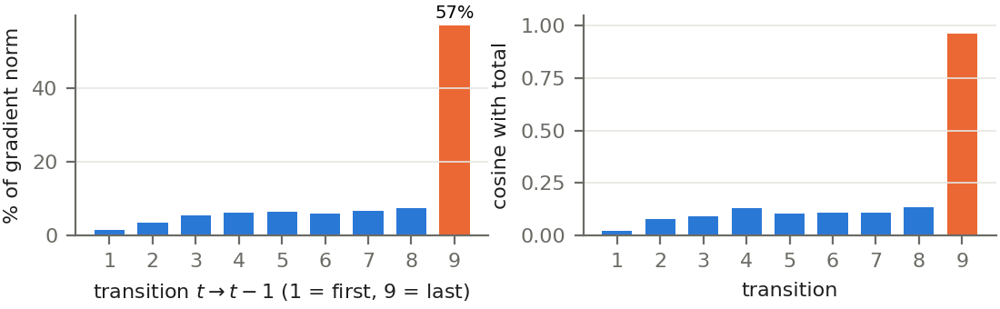
The last denoising step dominates: 57% of the gradient (and 92% of the KL penalty's gradient) comes from it, because
its noise level σ is tiny and the log-prob gradient grows like 1/σ. That step only sharpens details, while letters form in steps 2–5.
This motivated leaving the last step out and training a window in the early steps.
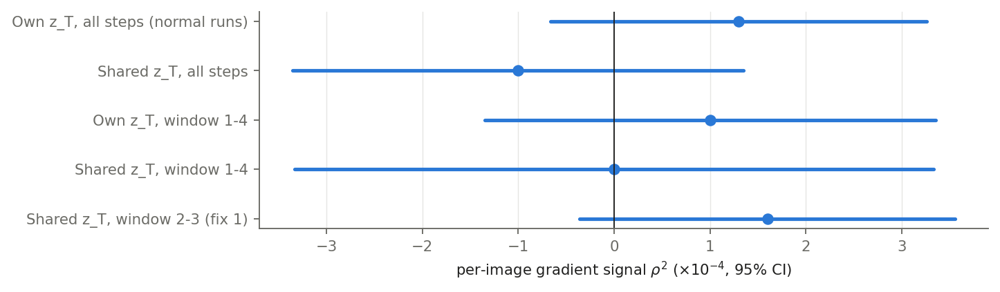
Hypothesis: each image has its own starting noise z_T, which adds pure noise to the gradient. Test: 5 variants, 512 images each,
with an unbiased estimator. No variant raises the per-image signal, so the starting noise is not the problem. Top row = the setup of
the normal runs (own z_T, all steps random). Bottom row = the setup of fix 1 (shared z_T, only steps 2–3 random): same signal,
but ~4× cheaper to train per image, which is why fix 1 uses it.
Two possible fixes(1) More images per update, made cheap by the 2-step window. (2) A lower-variance
gradient: backpropagate a differentiable OCR reward directly.
Fix 1 · worked
3. Fix 1: a long, cheap RL run
Setting
Normal run (NoisyCLIP + fixes)
Long OCR run
Prompts
alignment + text
text only
Reward
NoisyCLIP align (100→50) + OCR (40→80)
NoisyCLIP align 100 + OCR 80
Random (trained) steps
all 10, last left out of the update
only steps 2–3
Starting noise in a group
own per image
shared
Images per update × updates
256 × 100 = 25.6k
512 × 500 = 256k
lr / KL weight / group size
3e-4 / 0.01 / 8
3e-4 / 0.01 / 8
Time
8.3 h (A100)
22.6 h per seed (H200)
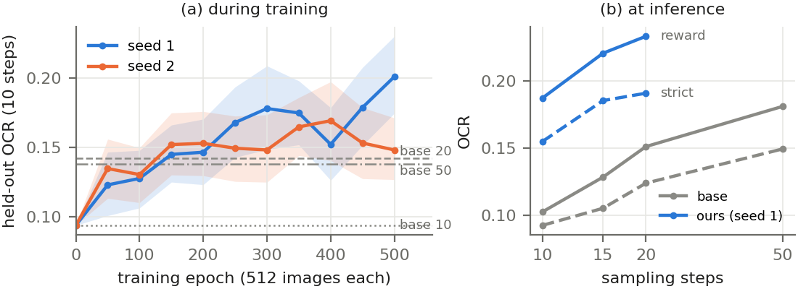
(a) Held-out OCR at 10 steps during training (128 test words × 4). Both seeds rise above base 10 within 50 epochs and
reach the base 20/50 band by epoch ~150, then fluctuate by ±0.03. (b) Seed 1's final model with more steps: it stays above
the base model at every step count, and at 20 steps it beats base at 50. Solid lines = the OCR reward, dashed = strict OCR (see the box below).
"Reward" vs "strict" OCRBoth read all the text in the image with PaddleOCR (lines joined, spaces removed, lower case) and compare it with the target word, as 1 − edit distance / word length.
Reward (what training optimises, and the "OCR" in all tables): if the target appears anywhere inside the text that was read, the image gets full credit (1.0), whatever else is written.
Strict: no such shortcut. The whole text that was read is compared with the target, so extra letters, extra words or a repeated word all cost points.
Example, target "SALE NOW": an image that reads "SALE NOW SALE NOW" gets 1.0 from the reward but 0.0 from strict; an image that reads "SALENOWX" gets 1.0 and 0.86. Strict is the check that the gain is not just the model writing more text or repeating the word. It is lower for every model, but the gain stays (see section 6).
New seeds, 1,024 images
OCR
Exact word
Text PickScore
Align PickScore
Base, 10 steps
0.103
1.3%
0.775
0.816
Base, 20 steps
0.151
3.5%
0.786
0.823
Base, 50 steps
0.181
3.7%
0.791
0.826
Ours seed 1, 10 steps
0.188*
4.0%*
0.787*
0.814 (−0.0013*)
Ours seed 2, 10 steps
0.150*
2.4%
0.782*
0.815 (n.s.)
In shortAt 10 steps, both seeds write text clearly better than the base model: seed 1 reaches the 50-step level and seed 2 the 20-step level. The images on text prompts also got better overall (Text PickScore at the 20-step level), and prompt alignment was not damaged (Align PickScore changes by at most 0.001).
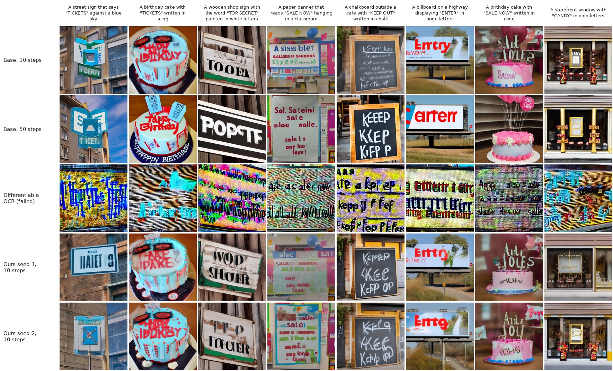
The first 8 OCR test prompts (prompt above each column), same starting noise in every row, first image per prompt (not cherry-picked). Rows: base 10 steps,
base 50 steps, the failed differentiable-OCR model, and our two long runs at 10 steps. Letters are larger and cleaner,
but spelling is still far from solved.
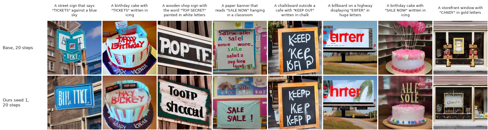
The same 8 prompts at 20 steps (base vs seed 1). The gain carries over to more steps, although training only used 10.Fix 2 · failed
4. Fix 2: a differentiable OCR reward
Setup: DRaFT/AlignProp-style training. Backpropagate TrOCR-large's likelihood of the target word (on the PaddleOCR text crop) plus a CLIP "text match" term, through the last 8 DDIM steps and the VAE. 600 updates of 8 images, 1 hour on the H200.
Warning sign before training: no differentiable reader agreed with PaddleOCR within a prompt (best Spearman 0.17).
Result: real legibility (PaddleOCR) halved, 0.245 → 0.125 (first vs last 100 updates). Only the CLIP term rose. On new seeds, text and image quality collapsed: OCR −0.052*, alignment PickScore −0.126*.
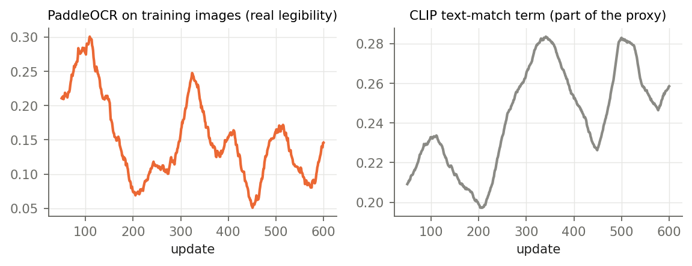
Training curves (50-update moving average). The proxy improved while the real metric fell: reward hacking. The collapsed images are in the third row of the grid in section 3.
5. All runs side by side
Every run was re-evaluated on new seeds (1,024 images per set) against the base model at 10 steps. A star (*) means the 95% CI excludes zero.
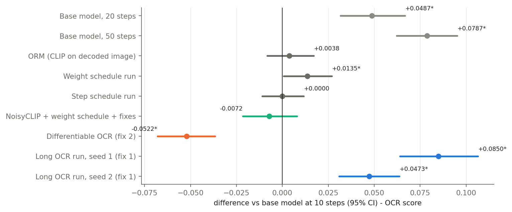
OCR on held-out text prompts. Every normal-sized run (gray, green) stays near zero, far below what 20 or 50 steps give.
Only the long runs (blue, fix 1) reach that range. The differentiable OCR reward (orange, fix 2) made text worse.Robustness · seed 1
6. Checking if the gain is actually real
Worry: the reward gives full credit if the word appears anywhere, and some images write the word twice. So we re-scored
the same images with stricter metrics and two other OCR engines.
Metric
Base 10
Ours 10
Base 50
Ours 20
OCR reward (PaddleOCR, substring credit)
0.103
0.187*
0.181
0.234*
Strict OCR (no substring credit)
0.092
0.155*
0.149
0.191*
A line reads exactly the word
0.7%
2.7%*
2.6%
4.0%*
TrOCR (second reader) reads it exactly
1.9%
6.7%*
5.1%
7.4%*
EasyOCR (own detector + reader), strict
0.063
0.109*
0.119
0.156*
Word written twice or more
0.0%
0.3%
0.2%
0.1%
* vs the base model at the same step count. EasyOCR ran in a separate paired job on an A100. Lines detected per image: 2.5 for both models.
VerdictThe gain survives every check. Repetition is rare (0.3%) and does not explain it. Three
independent readers agree that the 10-step model writes the word correctly 2–4× more often.
7. GRPO runs: alignment improved, text did not
All runs below were re-evaluated on new seeds (1,024 images per set) against the base model at 10 steps. A star (*) means the 95% CI excludes zero. Their OCR results are in section 5.
Why added PickScoreFirst, we only measured alignment only with CLIP. Two problems:
CLIP is not independent: the rewards we train on are CLIP-based (the ORM baseline uses CLIP on the final image, and both noise judges are CLIP models). A model can raise CLIP without really getting better.
CLIP barely sees the cost of fewer steps: CLIP is almost the same at 10, 20 and 50 steps (+0.001), even though the 10-step images clearly look worse.
PickScore is a CLIP-H model fine-tuned on human choices (Pick-a-Pic: which of two images people preferred for a prompt). It scores alignment and image quality together and is never used as a reward, so it works as an independent judge. It also separates the step counts: base 20 and 50 steps beat 10 steps by +0.008* and +0.011*. That makes it the main alignment/quality metric.
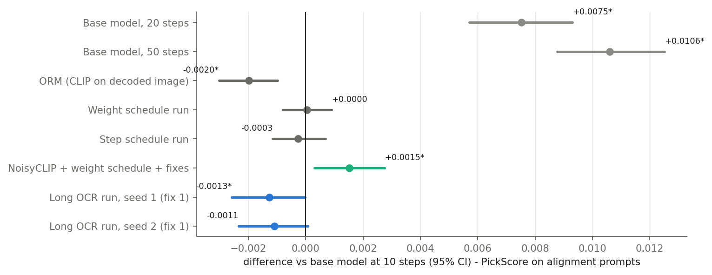
PickScore on held-out GenAI-Bench prompts (an independent judge never used in training). The NoisyCLIP run
(green) is the only one with a confirmed gain. The long OCR runs barely change alignment, although they never saw alignment prompts.
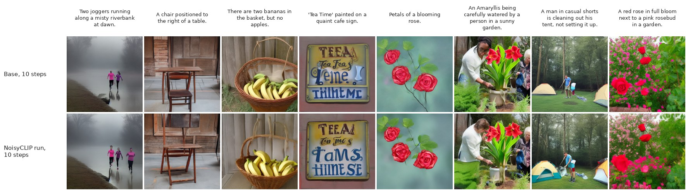
The first 8 held-out GenAI-Bench prompts (prompt above each column), same starting noise: base (top) vs the NoisyCLIP run (bottom), 10 steps. The changes are small, as the numbers say.
Run (final checkpoint, new seeds)
Align CLIP
Align PickScore
Text CLIP
Text PickScore
OCR
Base 20 steps
+0.0010
+0.0075*
+0.0047*
+0.0114*
+0.049*
Base 50 steps
−0.0001
+0.0106*
+0.0055*
+0.0166*
+0.079*
ORM: CLIP on decoded image
+0.0001
−0.0020*
+0.0004
+0.0011*
+0.004
Weight schedule run
+0.0004
+0.0000
+0.0013
+0.0021*
+0.014*
Step schedule run
−0.0002
−0.0003
−0.0003
+0.0012*
+0.000
NoisyCLIP + weight schedule + fixes
+0.0014*
+0.0015*
+0.0069*
+0.0035*
−0.007
"Fixes" = from the gradient diagnosis in section 2: the last step left out of the update, a lower KL weight (0.01) and one large update per epoch. "Weight schedule": reward weights move from alignment to text over 60 epochs (in the NoisyCLIP run, OCR starts at half weight instead of 0). "Step schedule": the number of sampling steps grows 4 → 6 → 8 → 10. No long run (sections 3 and 5) uses a schedule.
8. NoisyCLIP works on SD1.5 only with a colour map
NoisyCLIP was trained on SDXL latents. On SD1.5, its own colour map gives wrong colours (top row). Rendering the
predicted clean latent with a linear map fitted to SD1.5 (Φ, middle row) shows the real layout from step 4–6.
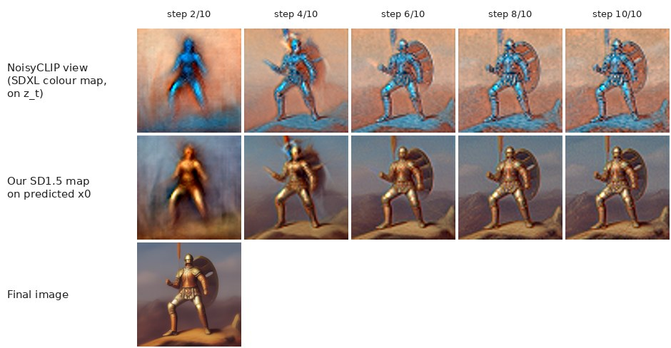
What the judge sees along a 10-step trajectory ("A warrior with a metal armguard standing on a hill").
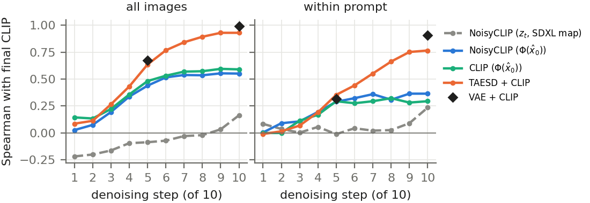
How well a judge applied at step k predicts the final image's CLIP score (512 images, held-out GenAI-Bench prompts).
NoisyCLIP as published (gray, on z_t) is near zero. On Φ(x̂₀) (blue) it reaches 0.44 at step 5, the same as plain CLIP on that view.
TAESD (a tiny decoder) is more accurate but 2.6× more expensive.
Judge
Cost (UNet steps)
Spearman at step 5: all images
Within the same prompt
Wrong-prompt detection
NoisyCLIP on z_t (paper's input)
0.104
−0.09
−0.01
78%
NoisyCLIP on Φ(x̂₀) (used)
0.104
0.44
0.29
100%
TAESD decode + CLIP
0.275
0.63
0.35
100%
VAE decode + CLIP
1.80
0.67
0.32
100%
Spearman, all images: does the judge's score at step 5 of 10 predict the CLIP score of the finished image? 1 = perfect order, 0 = random.
Within the same prompt: the same, but only ranking the 4 images of each prompt against each other. This is what GRPO needs, since it compares images of the same prompt in a group.
Wrong-prompt detection: how often the judge gives the true prompt a higher score than a random other prompt.
What this showsNoisyCLIP easily tells a completely wrong prompt apart (100%), but ranking images of the same
prompt at step 5 is hard (0.29). No cheap judge does much better that early: even a full VAE decode reaches only 0.32. Used as published
(z_t with the SDXL colour map) it gives nothing on SD1.5, and with our Φ view it performs like plain CLIP on that view, without the gain
that noise-aware training should bring. The paper reports ~0.9 midway on SDXL (50 steps), so NoisyCLIP does not transfer well to SD1.5
off the shelf (not a side-by-side comparison: 10 steps here).
StitchVM: a noise judge built for SD1.5
Proposed: backbone stitchingEarly layers of the diffusion model feed a reward-model tail through a small adapter sψ(ht).
It predicts the final reward from the current state, and the article reportes that it beat linears projection at high noise
(σ ∈ [0.1, 0.9]).
Plan
Adapt it to SD1.5: StitchVM was built for diffusion transformers; SD1.5 is a UNet, so stitch its down- and
mid-block features instead.
Cost: those features are computed anyway during denoising, so the judge only adds the adapter and the reward tail
(NoisyCLIP adds 0.10 UNet steps, a VAE decode 1.8).
Test offline first, no GRPO: train only the adapter on the 10-step trajectories already saved, then compare with
NoisyCLIP, TAESD and the VAE on the same 512 held-out images: Spearman per step, wrong-prompt detection and pruning savings
at α = 0.1. About a day of work and a few GPU hours.